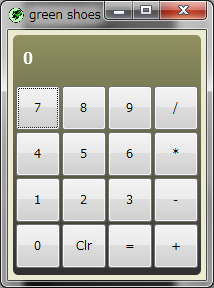

The Green Shoes Manual 1.0.331
The App Object
アプリケーションはURLでコードを実行する一つのウィンドウです。URLを切り替えるとき、新しい アプリケーションオブジェクトが作成され、スタック、フローや他の要素で満たされます。
アプリケーションはウィンドウ自体です。それは閉じられるか、クリアされるか、新しい要素で満たされる かもしれません。
スロット／ボックスの用語では、アプリケーション自体がフローです。詳しくはSlotsセクションを 見てください、しかし、これはどんな要素も直接フローのトップレベルに置かれることを単に意味します。
Green Shoesのアプリケーションウィンドウを開始します。これはGreen Shoesプログラムを作るための 出発地点です。ブロックの内部では、ウィンドウを様々なGreen Shoesの要素（ボタン、アートワーク、 その他）で満たし、そしてブロックの外では、ウィンドウがどれぐらい大きいのかを説明するために stylesを利用します。おそらくアプリケーションの名前についてもです。
Shoes.app title: "White Circle",
width: 200, height: 200 do
background black
fill white
oval top: 20, left: 20, radius: 160
end
上記のケースでは、小さなウィンドウを作成します。200×200ピクセルです。 そして、そのウィンドウには黒い背景と白い輪の2つの要素があります。
いったんアプリケーションが作成されれば、それはShoes.APPSの一覧に追加されます。 もしあなたがより多くのウィンドウを生成したいなら、windowメソッドや dialogメソッドを見てください。
現在開いているすべてのGreen Shoesアプリケーションの完全な一覧を作成します。 いったんアプリケーションが閉じられると、その一覧から取り除かれます。 そう、Green Shoesでは一度に多くの実行できます。それはとても元気付けられます。
システムのクリップボードのすべてのテキストを含む文字列を返します。 これはコンピュータ上のどのプログラムからでもカットアンドペーストできるグローバルクリップボードです。
システムクリップボードにa stringのテキストを保存します。
アプリケーションのウィンドウを閉じます。 複数のウィンドウを開いていて、すべてのアプリケーションを閉じたいなら、ビルトインメソッドの exitを利用してください。
Shoes.app do
para 'hello'
button 'spawn' do
Shoes.app do
para 'hello'
button('close: close this window only'){close}
button('exit: quit Green Shoes'){exit}
end
end
button('close: close this window only'){close}
button('exit: quit Green Shoes'){exit}
end
ダウンロードのスレッド（あなたがJavaScriptに詳しいのなら、およそXMLHttpRequestのようなものです） を開始します。このメソッドは、すぐに戻り値を返してバックグラウンドでダウンロードを開始します。 また、それぞれのダウンロードスレッドがstart、progressやfinishイベントを開始します。 downloadにファイルを送ることや、（finishイベントの中で）文字列を取り戻すことができます。
downloadにブロックを付けると、それはfinishイベントとして呼ばれます。
Shoes.app do
stack do
title "Searching Google", size: 16
@status = para "One moment..."
download "http://is.gd/bXTVY7" do |goog|
@status.text = "Headers: #{goog.meta}"
end
end
end
この例は本当にdownloadの最も簡単な形です：いくつかのウェブデータをメモリにダウンロードして、 ダウンロードが完了するとそのデータを操作しています。
downloadのもう一つのサンプルはいくつかのウェブデータを、:saveスタイルを利用してファイルに 保存します。
Shoes.app do
stack do
title "Downloading Google image", size: 16
@status = para "One moment..."
download "http://is.gd/GVAGF7",
:save => "nasa50th.gif" do
@status.text = "Okay, is downloaded."
image "nasa50th.gif", top: 100
end
end
end
もしも特定のヘッダかアクションをウェブサーバへ送る必要があるのならば、HTTPリクエストを カスタマイズするために:method、:headersや:bodyスタイルを利用することができます。 （そして、それら以上のスタイルが必要なら、いつでもRubyのOpenURIクラスを準備することができます。）
# Not yet available
Shoes.app do
stack do
title "GET Google", size: 16
@status = para "One moment..."
download "http://is.gd/bXTVY7",
:method => "GET" do |dump|
@status.text = dump.response.body
end
end
end
上記の例から、Shoesは、Googleのサーチエンジンへ質問するために"GET"メソッドを 利用することが分かります。
注意: Green Shoesは、:method, :headers, :bodyスタイルをサポートしていません。
include Hpricot
Shoes.app do
status = para "One moment..."
download 'http://is.gd/BatiRt' do |dl|
samples = []
Hpricot(dl).inner_text.each_line do |line|
samples.push($1) if line =~ /(sample.*\.rb)/
end
status.text = samples.join(', ')
flush
end
end
上記の例から、Green ShoesはHTML解析のためにHpricotライブラリを組み込んでいることが わかります。
注意: 今のところWindowsプラットフォームのみです。
現在のアプリケーションのURLを含む文字列を取得します。
どちらのボタンが押されたのかと共に、マウスカーソルの位置を特定します。
Shoes.app do
@p = para
animate do
button, left, top = self.mouse
@p.replace "mouse: #{button}, #{left}, #{top}"
end
end
このアプリケーションを開始したアプリケーションを取得します。多くの場合、これはnilでしょう。 しかしwindowメソッドを利用してアプリケーションが開始されたなら、 その所有者はwindowと呼ばれるアプリケーションでしょう。
ウィンドウはすべて構築され、表示されましたか？これは完全に構築される前に、 ウィンドウを利用しようとするスレッド化されたコードのために役に立ちます。 （また、ウィンドウが開くときに実行されるstartイベントも見てください。）
注意:' 今のところGreen Shoesではstarted?メソッドをサポートしていません。
異なるShoesのURLを見るために、ロケーションを変更します。
（http://google.comのような）絶対パスのURLは悪くないですが、Green ShoesはGreen Shoes アプリケーションがそのアドレスに存在することを期待するでしょう。 （そのため、google.comはHTMLアプリケーションとしては動作しません。）
Next: The Styles Master List